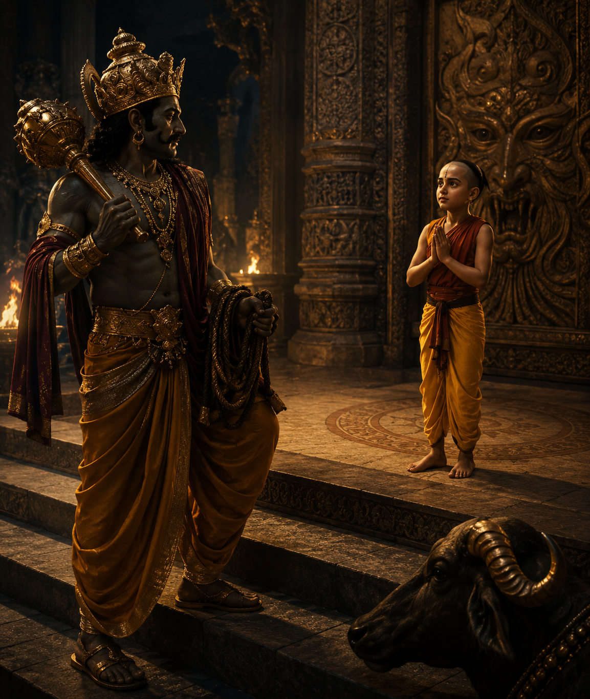
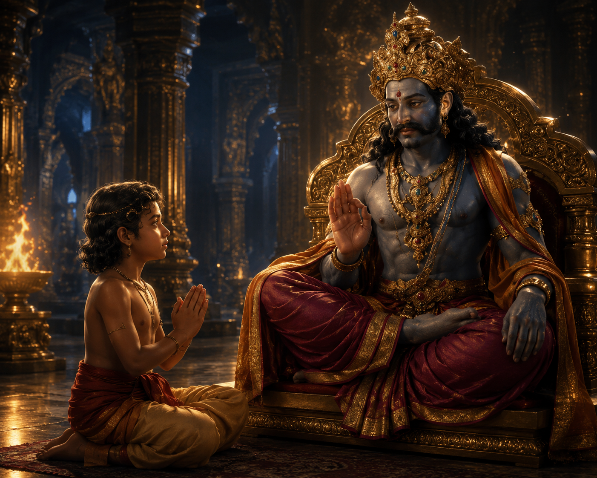
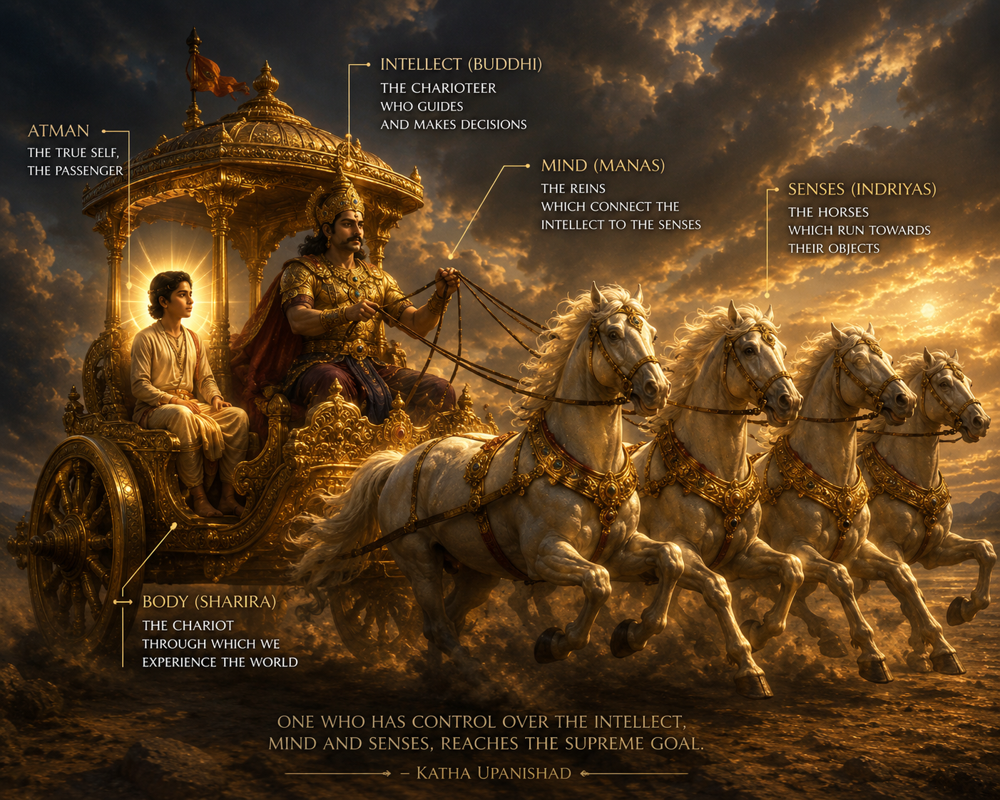
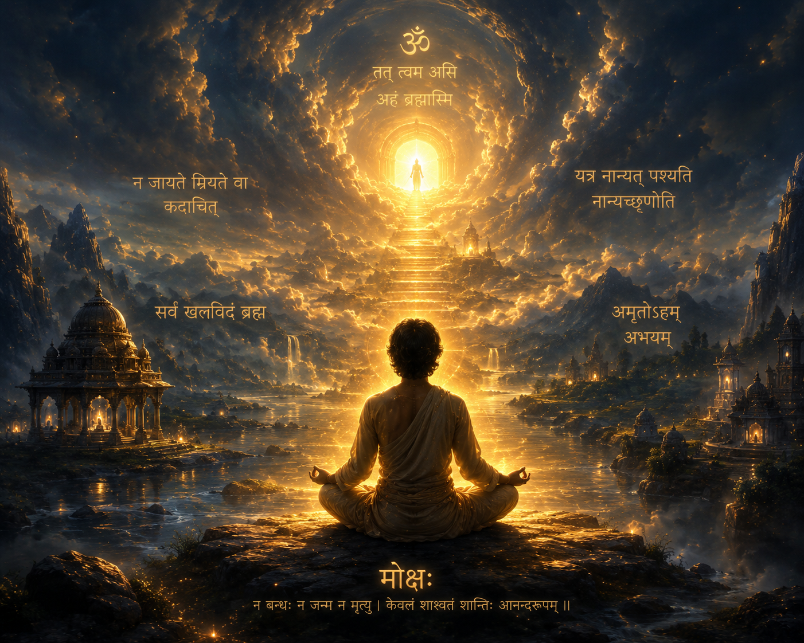

Long ago, during the Vedic age, there lived a man named Vajashravas. He resided in the beautiful Himalayan region of present-day Uttarkashi, in what is now the Indian state of Uttarakhand.
He had a ten-year-old son named Nachiketa.
One day, Vajashravas announced that he would perform a great sacrifice and donate all his worldly possessions as an act of selfless charity. Among the gifts he offered were several cows.
However, young Nachiketa soon realized that his father's charity was not entirely sincere. The cows being donated were old, barren, weak, or no longer capable of producing sufficient milk. Instead of offering his best possessions, Vajashravas was giving away only those that had little value.
Troubled by this, Nachiketa questioned his father. If true charity meant giving away what was most valuable, then to whom would he himself be offered?
He respectfully asked,
"Father, to whom will you give me?"
At first, Vajashravas remained silent. But Nachiketa continued asking the same question again and again.
Finally, overcome with anger, Vajashravas exclaimed,
"I give you to Yama!"
Here, Yama refers to Yama, the Lord of Death.
Unlike an ordinary child, Nachiketa accepted his father's words with complete sincerity. Believing that a father's promise should never be false, he resolved to journey to the abode of Yama.
Guided by the purity of his determination, he reached a vast and mysterious chasm that descended deep into the earth—the gateway to Yamaloka, the realm of the Lord of Death.

Nachiketa descended into the darkness until he arrived at the gates of Yamaloka.
At that time, Yama was away. The gatekeepers had never before seen a living person willingly arrive in the realm of death, and so they refused him entry.
Without complaint, Nachiketa remained seated at the entrance, patiently waiting for Yama's return.
He waited there for three days and three nights, without food or water.
When Yama finally returned, he was deeply saddened to learn that a guest had been left waiting outside his home for three days without receiving proper hospitality.
Considering this a grave failure on his part, Yama decided to atone for it by granting Nachiketa three boons.
For his first boon, Nachiketa asked that he might return home alive, and that his father would welcome him once again with love, peace, and affection.
Yama immediately granted the boon.
For his second boon, Nachiketa requested that Yama teach him the sacred knowledge of the Vedic fire sacrifice.
Yama carefully explained the complete science of the sacred fire ritual. He described how the altar should be constructed, how the bricks were to be arranged, how the sacred fire symbolized the structure of the universe itself, and the profound spiritual meaning hidden within every part of the sacrifice.
After listening attentively, Nachiketa repeated every instruction exactly as Yama had taught it.
Pleased by the boy's remarkable understanding, Yama praised him warmly.
Yama then declared that one who performs these sacred fire sacrifices correctly, honors one's mother, father, and teacher in their proper order, fulfills one's duties, pursues knowledge, and practices generous charity becomes free from sorrow and suffering in life.
For his third boon, Nachiketa asked Yama to reveal one of humanity's greatest mysteries:
"What happens after death?"
Yama hesitated before answering.
Instead, he urged Nachiketa to ask for any other boon. He offered him immense wealth, long life, power, heavenly pleasures, beautiful chariots, music, and every enjoyment that human beings could desire.
But Nachiketa remained unmoved.
He replied that all worldly pleasures are temporary. Wealth eventually disappears, youth fades, and even the longest life must one day come to an end.
Therefore, he desired only the answer to the question he had come to ask.
Deep within, Yama was delighted by the unwavering determination of his young disciple.
He said that to understand this profound truth, one must first learn to distinguish between what is truly good and what is merely pleasant.
The pleasant satisfies the senses and the desires born of ignorance, while the good leads one toward lasting wisdom and liberation.
Yama explained that this truth can be studied, heard from teachers, and contemplated through deep reflection. Yet, despite all this, very few truly realize it.
Its realization is extremely difficult and demands sincere effort. But once attained, its knowledge is eternal.
It can be taught.
It can be learned.
And ultimately, it must be known through direct experience.

Yama then revealed that the Atman—the true Self—indeed exists, although it is subtle, mysterious, and invisible to the physical senses.
The Self has always existed.
It was not born with the body, nor does it perish when the body dies.
Yama declared:
"He who realizes the Divine Self within through yoga and deep contemplation rises beyond both pleasure and sorrow. When the mind, the senses, and every thought become perfectly still, and the intellect remains undisturbed, that state is called the highest path. That is Yoga—the stillness of the senses and the complete steadiness of the mind."
Yama further explained that the ultimate purpose of the Vedas is to liberate human beings.
Their goal is to free us from the endless cycle of karma, birth, and death, turning our attention away from ignorance and toward true knowledge, so that we may realize the blissful reality that lies beyond both happiness and suffering.
This realization becomes possible only when one directly experiences that the Atman is none other than Brahman, and that the essence of this truth is expressed by the sacred sound:
ॐ
Yama explained that Om is the symbol of Brahman—the Supreme Reality, the Absolute Truth, and the blissful existence that dwells within every being.
He taught that human beings need fear nothing—not even death itself.
For our true nature is the Self, which is unborn, eternal, indestructible, and one with Brahman.
When a person directly realizes that the whole of existence is nothing but Brahman, they experience a supreme bliss beyond the reach of words.
That is the highest happiness.
Yama concluded:
"The Self is never born, nor does it ever die. It has not come into being from anything, nor does it transform into something else. It is eternal, everlasting, and beginningless. Even when the body perishes, the Self remains untouched. One who is free from desire, sorrow, and attachment, abiding in peace and contentment, beholds the supreme glory of the Self."
Yama then explained that Self-knowledge, or Self-realization, cannot be attained merely by listening to the teachings of others. Nor can it be reached through intellectual debate, logical reasoning, or the study of scriptures alone.
Its true realization must arise through one's own meditation, contemplation, and direct inner experience.
This wisdom is not attained by those who live violently or unrighteously, nor by those whose minds are restless and undisciplined. It is realized only by those who cultivate self-control, inner peace, moral conduct, sincere self-examination, and the courage to look within in search of their true nature.
To illustrate the relationship between the body and the Self, Yama offered a beautiful metaphor—the chariot.

He said that the body is like a chariot, while the Self is the traveler seated within it.
The intellect is the charioteer, the mind is the reins, and the senses are the horses pulling the chariot.
When a person's intellect fails to exercise wisdom, when the senses remain uncontrolled, and when the mind is left unchecked, life loses its direction. Such a person wanders through confusion and remains bound by the attachments of the world.
On the other hand, one who allows wisdom to guide the intellect, keeps the senses under discipline, and masters the mind lives a life of harmony and joy. Such a person ultimately becomes worthy of attaining the supreme abode of Lord Vishnu.
Yama further explained that, on the ordinary level of life, most people know only the interaction between the senses and the external world.
But at the highest level of consciousness, a person can simultaneously become aware of the mind, the intellect, the Self, the unmanifest reality that pervades the entire universe, and finally the Purusha—the Supreme Cosmic Being who is the ultimate goal of all existence.
The Self is one and the same in every living being.
It cannot be perceived through the ordinary senses, yet sages and seers realize it through subtle awareness and deep meditation.
Through this realization, one discovers that the Self within oneself and the Self within every living being are not different.
They merely appear in countless forms, while their essence remains one.
In that realization, one experiences an unbroken, peaceful, and non-dual unity with the Universal Self.
Although the Self cannot be perceived through the senses, it is beginningless, infinite, and blissful by its very nature.
Yama then said:
"If you wish to know the Self, look within and contemplate deeply. If you wish to know the external world, look outward and examine it."
He explained that whatever undergoes change cannot be the Self.
That which existed before, exists now, will continue to exist forever, and never undergoes any change—that alone is the Self.
The Self is a manifestation of the Eternal Reality that existed even before the birth of the universe.
It is present everywhere and pervades all existence.
To understand the eternal nature of the Self and to live in harmony with its truth is to discover genuine peace, patience, inner contentment, and a freedom that does not depend on external circumstances.
One who realizes that the same Self dwells within oneself and within every living being—appearing only through different forms—remains forever joyful, and life becomes filled with an inexhaustible bliss.
Yama then spoke about the destiny of individual souls after death.
He explained that not all beings follow the same path when the body dies.
Those who have not realized the true nature of the Self are born again according to their karma. They take on new bodies and continue through the endless cycle of birth and death.
Those who attain Self-knowledge, however, become free from this cycle. They attain Moksha, liberation from all bondage.
Yama said that such enlightened beings abide in Sthāṇu—the Eternal, Unchanging, and Immutable Reality. Sthāṇu is also one of the ancient names of Lord Shiva, symbolizing that which remains forever unmoved.

Yama further explained that this state of perfection is not something to be attained only after death or in some distant heavenly world.
One who realizes the Self can experience this perfection here and now, while still living in this very life.
For the one who knows the Self as Brahman, liberation is not a future event—it becomes a present reality.
Having received the answer to his final question, Nachiketa realized Brahman.
He became free from ignorance and from every form of bondage.
When he departed from the realm of Yama, he was no longer an ordinary seeker.
He had become a Jivanmukta—one who is liberated while still living.
In time, Nachiketa grew into a great sage.
Near the very entrance to Yamaloka—the deep chasm through which he had journeyed—he established an ashram dedicated to spiritual learning and contemplation.
Close to that sacred place lay a beautiful lake.
In later generations, the lake came to be known as Nachiketa Tal, a name it continues to bear even today.
Katha Upanishad (Krishna Yajurveda)
This retelling is based primarily on the teachings of the Katha Upanishad and is presented in a narrative style for modern readers.